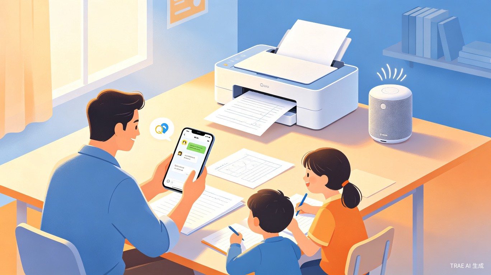
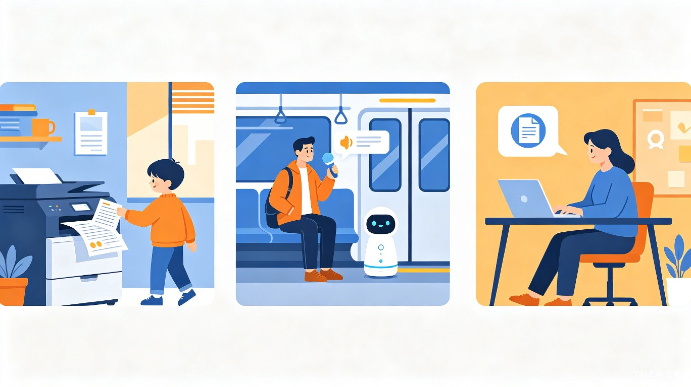

QQ消息一键打印 + 蓝牙音箱播放
专为小学生家长打造的智能助手。将班级群里的作业通知、学习资料、听力音频，通过QQ消息一键转发，自动完成打印与播放，让繁琐的家校沟通变得轻松高效。

三大核心能力，覆盖家长日常处理学习资料的全流程
基于QQ机器人协议，自动监听家长转发的文字、图片、文件、音频消息，无需手动下载或保存。
通过文件扩展名和关键词智能识别内容类型：.doc/.pdf/.jpg 自动路由打印，.mp3/.wav 自动路由播放。
连接家用打印机自动输出纸质资料，连接蓝牙音箱自动播放听力音频，任务完成后即时反馈执行结果。
只需三步，从收到消息到完成打印/播放
在QQ群收到老师发送的资料或音频，一键转发给QQ智伴
助手自动识别文件类型，判断是打印任务还是播放任务
打印机输出纸质资料 / 音箱播放音频，完成后回复确认消息
flowchart LR
A[家长转发QQ消息] --> B{消息类型判断}
B -->|文件: doc/pdf/jpg| C[打印任务]
B -->|文件: mp3/wav| D[播放任务]
B -->|文字含关键词| E[指令解析]
C --> F[CUPS打印系统]
D --> G[蓝牙音箱播放]
E --> C
E --> D
F --> H[回复: 已打印X页]
G --> I[回复: 正在播放]
覆盖家长一天中高频使用需求的三大典型场景

收到老师发布的Word作业或PDF资料，转发给智伴，打印机自动输出，孩子回家直接使用。
上班路上收到英语听力MP3，一键转发，家里蓝牙音箱自动播放，孩子在家即可跟读练习。
在外开会或出差时收到紧急材料，远程转发即可完成打印，无需家人帮忙操作。
基于本地服务器部署，保障家庭数据隐私，同时实现低延迟响应
flowchart TB
subgraph Mobile["家长手机"]
QQ["QQ App"]
end
subgraph LocalServer["家庭本地服务器
树莓派 / 旧电脑"]
Bot["QQ Bot
go-cqhttp / NapCatQQ"]
Parser["消息解析引擎"]
Router["任务路由"]
CUPS["CUPS打印系统"]
BlueZ["BlueZ蓝牙协议栈"]
end
subgraph Hardware["家庭硬件"]
Printer["家用打印机"]
Speaker["蓝牙音箱"]
end
QQ -->|转发消息| Bot
Bot --> Parser
Parser --> Router
Router -->|打印任务| CUPS
Router -->|播放任务| BlueZ
CUPS --> Printer
BlueZ --> Speaker
Bot -->|执行结果| QQ
基于 go-cqhttp / NapCatQQ 开源框架搭建消息监听服务，支持文字、图片、文件、音频等多种消息类型。
文件扩展名自动路由 + 关键词匹配 + 手动指令前缀（如 #打印 / #播放），三重识别机制确保准确。
通过 CUPS（通用Unix打印系统）或厂商SDK接入，兼容主流家用打印机型号，支持黑白/彩色、单双面设置。
通过 BlueZ 蓝牙协议栈或系统音频API控制蓝牙音箱的连接与播放，支持 MP3、WAV 等常见格式。
不止于工具，更是家庭教育管理的智能化入口
将"接收 → 判断 → 下载 → 打印/播放"的多步操作压缩为"转发消息"一步完成。对于每天需要处理3-5条学习资料的家长，一周可节省1-2小时。
产品可扩展为面向学校/教育机构的标准化硬件套装（预装助手的迷你主机 + 打印机 + 音箱），以订阅制或一次性付费模式切入家庭教育硬件市场，与现有智能音箱、学习机形成差异化竞争——它不替代学习，而是服务家长的管理环节。